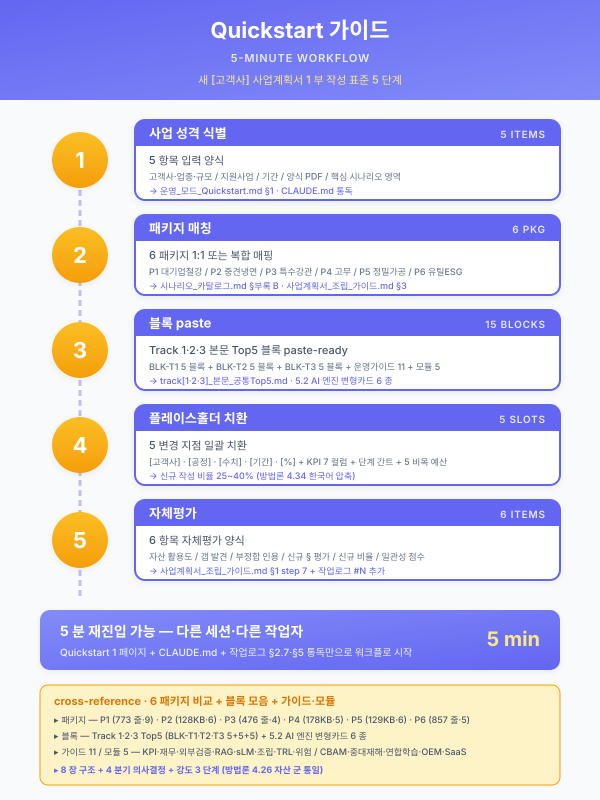

운영 모드 Quick-Start (1 페이지 요약)¤
📖 약 5 분 읽기

ℹ️ 페이지 정보 (워크스페이스 메타)
본 문서는 본 워크스페이스 (~E8 누적 자산 41 종, 17,645 줄) 를 활용하여 실 [고객사] 사업계획서 1 부를 작성하는 표준 운영 모드 5 단계 흐름의 1 페이지 요약이다. 다른 세션·다른 작업자 (사람 또는 AI) 가 본 워크스페이스 재진입 시 5 분 안에 워크플로 시작 가능하도록 설계되었다.
선행 의무:
meta/claude-md.md(워크스페이스 규약) +meta/worklog.md최신 5 엔트리 통독.
1. 새 요청 수신 — 5 항목 입력 양식¤
실 [고객사] 사업계획서 작성 요청 시 다음 5 항목을 사용자로부터 입력 받는다.
| 항목 | 입력 예 |
|---|---|
| ① 고객사명·업종·규모 | 동국제강 / 후판·봉형강 대기업 / 종업원 5,000+ |
| ② 적용 지원사업 | 전사적 DX 촉진 R&D / 디지털 경남 / 스마트공장 기초·고도화 등 |
| ③ 사업 기간 | 단년 (9·12·18 개월) vs 다년 (단계+연차 이중 구조) |
| ④ 양식 PDF 가용성 | 양식 PDF 있음 (검증 사이클 1 회 추가) vs 없음 (패턴 추정만) |
| ⑤ 핵심 시나리오 영역 선호 | AI 두께 예측 / RAG 작업지시 / CBAM 대응 / 통합 관제 등 |
2. 패키지 매칭 — 6 패키지 1:1 또는 복합 매핑¤
scenario/catalog.md §부록 B 의 6 패키지 중 매칭. 복합 매칭 시 guide/assembly.md §3 SCN ID 부정합 처리 정책 적용.
| 패키지 | 기업 규모·업종 | 핵심 시나리오 | 통합 파일럿 자산 |
|---|---|---|---|
| 1 | 대기업 철강 다년 R&D | STL-01·03·09·10 + UTL-01 + MLO-01·02 + LLM-02 + SAF-02 (9 시나리오) | pkg/pkg1-steel-enterprise.md (773 줄) |
| 2 | 중견 스테인리스 냉연 | STL-04·05·06·09 + MLO-03 + LLM-02 (6 시나리오) | pkg/pkg2-cold-rolled.md (~128 KB) |
| 3 | 중견 특수강관 (RAG 중심) | STL-07·08·11 + LLM-01 (4 시나리오) | pkg/pkg3-special-pipe.md (476 줄) |
| 4 | 고무 양산 (압출 품질) | RUB-01·02·05 + LLM-03 + MLO-01 (5 시나리오) | pkg/pkg4-rubber.md (~178 KB) |
| 5 | 정밀가공 중소 (SaaS 9 개월) | MET-01·03 + UTL-01 + LLM-01·04 + SAF-01 (6 시나리오) | pkg/pkg5-precision.md (~129 KB) |
| 6 | 유틸·ESG 12 개월 | UTL-01·02·03 + SAF-01·02 (5 시나리오) | pkg/pkg6-util-esg.md (857 줄) |
3. 양식 검증 (다년 R&D 사업 시)¤
양식 PDF 통독 + 양식검증_DX촉진_R&D.md (282 줄, 8 섹션 구조) 패턴 답습. 양식 검증 군 자산 신설 시 자산 군 포맷 통일 적용.
8 섹션 구조 (양식 검증 군 자산 통일): - §1 양식 개요 (PDF 메타·기간 표준·기술분류·자격) - §2 §·표·필수 항목 100% 추출 - §3 9 시나리오 ↔ 양식 § 매핑 표 - §4 자산 cross-reference 표 (전 자산 인용 위치) - §5 단계별 강제 분리 항목 (다년 R&D 시) - §6 신규 작성 §·표 + 신규 비율 추정 - §7 발견 갭 (사전 식별) - §8 본 사업계획서 작성 청사진
4. 통합 파일럿 변형 — 핵심 5 변경 지점¤
매칭된 패키지 파일럿 (위 §2 표) 의 다음 5 변경 지점만 수정 + §3 이후 본문 재사용.
| 변경 지점 | 변경 대상 |
|---|---|
| §1.2 [고객사] 가설 박스 | 새 [고객사] 가설 (4 대 정합 조건 — 규모·공정·ESG·입지) 으로 1 회성 명시 |
| §2.3 KPI 7 컬럼 표 | [수치] (기존·목표) 정량 변경 |
| §5.1·5.2 단계별 추진 목표 + 간트차트 | (다년 R&D 시) 단계 구간·연차 시점 변경 |
| §6.1·6.2 단계별 5 비목 예산 표 | [수치] (각 비목 액수) 변경 |
| 본문 [고객사]·[공정]·[수치]·[기간]·[%] 플레이스홀더 | 일괄 치환 (전 본문) |
→ 신규 작성 비율 약 25~40% ( 한국어 압축 + 자산 재활용 효과 결합).
5. 자산 인용 + 자체평가¤
5.1 자산 인용 권장 (트랙별)¤
Track 1 — 제조 AI 본문:
- track/track1-index.md (§ 골격) + track/track1-top5.md (BLK-T1-3.1·3.2·4.4·4.5·4.6 5 블록 paste-ready) + track/track1-engine-cards.md (5.2-a·b·c·d·e·f 6 카드)
Track 2 — MLOps:
- track/track2-index.md (§ 골격) + track/track2-top5.md (BLK-T2-3.2·4.2·4.4·5.5·6.1 5 블록 paste-ready)
Track 3 — LLM·RAG:
- track/track3-index.md (§ 골격) + track/track3-top5.md (BLK-T3-3.1·3.2·4.2·5.2·5.5 5 블록 paste-ready)
11 운영 가이드 (Track 본문 + 자산 매핑 보강):
- 가이드_KPI_측정 · 가이드_재무_예산_산정 · 가이드_외부검증_운영 · 가이드_RAG_인프라_운영 · 가이드_도메인_지식추출 · 가이드_한국_sLM_활용 · 사업기간_압축_가이드 · 사업계획서_조립_가이드 · 가이드_컨설팅_위탁_운영 (다년 R&D 1단계) · 가이드_TRL_진척_관리 (다년 R&D) · 가이드_위험관리_매트릭스 (다년 R&D)
5 모듈 (성격별 결합):
- 모듈_CBAM_대응 · 모듈_중대재해_안전 · 모듈_연합학습_산단공동 · 모듈_OEM_공급망_정합 · 모듈_SaaS_클라우드_보안
기타 활용도 高:
- 시너지_ROI_모델 · 책임_분담_매트릭스
5.2 자체평가 6 항목 (사업계획서_조립_가이드 §1 step 7 표준)¤
본 사업계획서 작성 종료 시점에 다음 6 항목 자체평가를 본문 §8 또는 별첨에 명시.
- 자산 활용도 — 본 사업계획서가 인용한 자산 수 / 41 자산 비율 + 군별 분포
- 갭 발견 — 사전 식별 갭 + 작성 중 신규 발견 갭 (기존 자산 부재 영역)
- 자연스럽지 않은 인용 — 자산 인용이 본문 흐름과 부정합한 영역 (변형 적용 명시)
- 신규 섹션 평가 — 신규 작성 § 의 자립성·완결성 평가
- 신규 분량 비율 — § 별 신규 비율 + 가중평균 (목표 25~40%)
- 일관성 점수 — 출처 표기·SCN ID·단계 분기·5.2 카드 매핑·플레이스홀더 5 항목 (각 5/5)
6. 자산 보강 트리거 (운영 중 발견 시)¤
운영 중 자산 부재·부족 발견 시 다음 3 트리거 분기:
| 트리거 | 처리 |
|---|---|
| 외부 표준 출시 (CBAM 정식·중대재해·KOSHA·CSAP 등 잔여 4 외부 갭) | 출시 시점에 흡수 사이클 (+) |
| 새 양식 발견 (글로벌 협력 R&D·산학 R&D 등 다른 양식 첫 적용) | 양식 검증 군 자산 신설 (8 섹션 구조 답습) |
| 운영 중 부족 발견 (실 [고객사] 변형 시 자산 부재) | 단발 패치 (메인 직접) 또는 표준화 분기 () |
7. 1 페이지 워크플로 다이어그램¤
[새 요청] → [5 항목 입력]
↓
[패키지 매칭 — 6 패키지 1:1 또는 복합]
↓
[다년 R&D ?] ──Yes──→ [양식 검증 (8 섹션)]
↓ No ↓
[통합 파일럿 변형 — 5 변경 지점 수정]
↓
[Track 1·2·3 본문 Top5 + 운영 가이드 11 + 모듈 5 인용]
↓
[자체평가 6 항목 (사업계획서_조립_가이드 §1 step 7)]
↓
[최종 사업계획서 1 부 + 본문 §8 자체평가 + 신규 갭 식별]
↓
[작업로그 #N 추가 + 단일 커밋·푸시 (방법론 4.27)]
선행 자산 모두 활용:
meta/claude-md.md의 3 트랙 + 6 패키지 + 41 자산 + 36 방법론 (4.1~4.35 후보) + 작업로그 #01~#36. 본 워크스페이스 재진입 시 본 1 페이지 +meta/claude-md.md+ 작업로그 §2.7 (파일 목록) + §5 (미결 항목) 만 통독해도 5 분 안에 워크플로 시작 가능.마지막 갱신: ( 후속, 자산 건강 점검 + Quick-Start 신설). 이후 자산 군 변동 시 본 메모도 갱신.
📌 이 페이지 정보 (개발자용)
- 원본 파일:
운영_모드_Quickstart.md - 자산 군: 📋 운영 가이드
- slug 경로:
guide/quickstart.md - 워크스페이스 정책: 원본 .md 수정 0 — hooks 로만 시각 변환
- 자산 자족성 정상화: Phase E7 완료 (잔여 외부 갭 4)